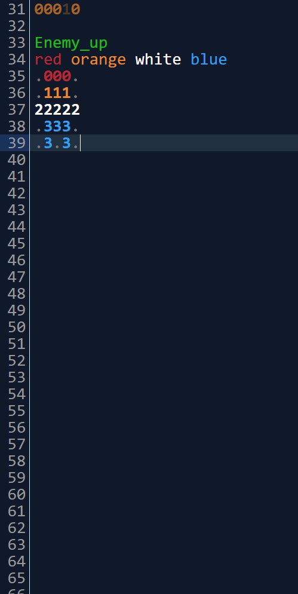
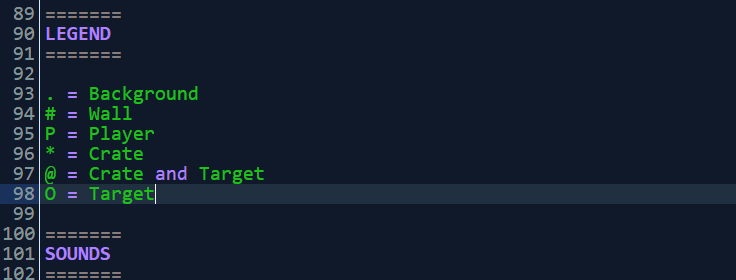
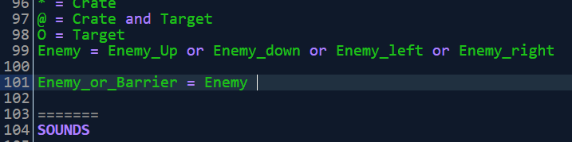
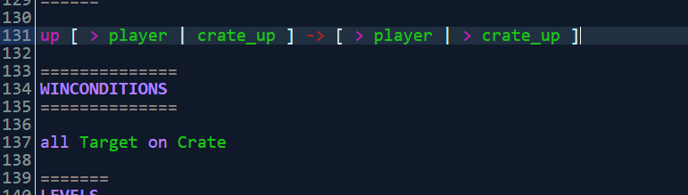

PuzzleScript has fancy autocomplete for objects and rules.
For instance, if you create an objected called Enemy_up, if as your next object you start typing C you will see in your autocomplete a suggestion to generate the rest (_down, _left, _right), which will also rotate the sprites with them.

There's been autocomplete added for many suffix variants:
| Suffix | Other parts complete to |
| _up | _down, _left, _right |
| _u | _d, _l, _r |
| _U | _D, _L, _R |
| Up | Down, Left, Right |
| UP | DOWN, LEFT, RIGHT |
| North | South, West, East |
| NORTH | SOUTH, WEST, EAST |
| _n | _s, _w, _e |
| _N | _S, _W, _E |
| Horizontal | Vertical |
| HORIZONTAL | VERTICAL |
| _horizontal | _vertical |
| _h | _v |
| _H | _V |
This isn't the end of it, though! Having defined an object with a suffix, you will also be able to autocomplete it in other parts of the code, such as auto-generating property-types in the legend:

Or appending to existing types:

This is not the end, though! If you type one rule that starts with a direction, if you add a new rule to the next line that starts with a direction, you will be prompted with a transformed version of that rule.

How do we decide how to transform the rule? It depends on the two directions. If they are 90 degrees apart, it's a rotation, otherwise we mirror the rule. If we have an up rule, a following down rule will be autocompleted as a vertical mirror:
up [ > Player | up Crate_up ] -> [ > Player | right Crate_right ]
down [ > Player | down Crate_down ] -> [ > Player | right Crate_right ]But if we autocomplete in series up, right, down, the down rule will be effectively a 180 degree rotation of the original up rule:
up [ > Player | up Crate_up ] -> [ > Player | right Crate_right ]
right [ > Player | right Crate_right ] -> [ > Player | down Crate_down ]
down [ > Player | down Crate_down ] -> [ > Player | left Crate_left ]This will do its best to transform any objects with suffixes mentioned in the above table, along with any movement directions mentioned.